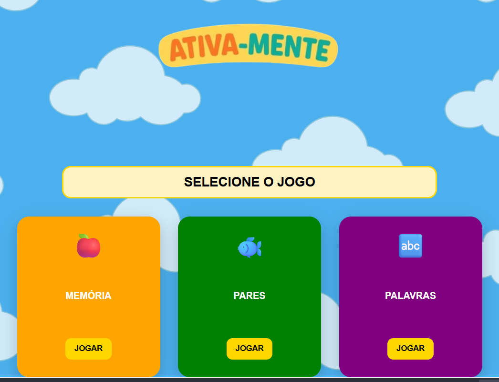

Portfólio
Projeto Ativa-mente
Projeto desenvolvido durante minha graduação em Ciência da Computação, voltado à tecnologia e impacto social. O Ativa-mente é um jogo digital com foco na estimulação cognitiva de crianças e idosos, utilizando mini jogos interativos.
O projeto reúne atividades como jogo da memória, caça-palavras e jogo dos pares, estimulando memória, atenção, raciocínio lógico e associação. A proposta do projeto é análisar os efeitos dessas atividades tanto no desenvolvimento intelectual infantil quanto na presença das capacidades cognitiva da pessoa idosa
Atualmente o projeto encontra-se em fase de desenvolvimento e o código-fonte ainda não está disponível publicamente.
